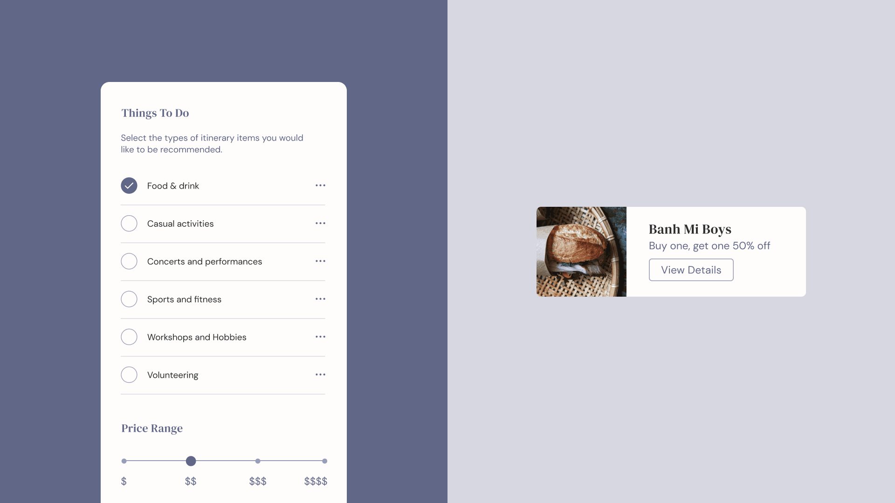
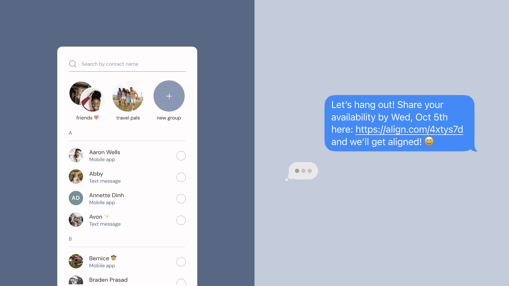

The Scope
By leveraging artificial intelligence, Align is a mobile app that schedules social time and
recommends local activities according to everyone’s calendars and preferences. While taking into
account each person’s needs, creating plans with friends can be a process that is challenging and
time-consuming. It is essential to consider everyone’s availability, tastes, and location—while
ensuring that all participants are constantly informed about plans. The app simplifies this process
by generating suitable recommendations to establish alignment across a group of friends.
How does Align work?
The individual who sends out the invitation begins by specifying the frequency of events, the times
to consider, and the participants to add. Through automation, the app can integrate with each
attendee’s pre-existing calendars, including Google Calendar and iCal, for their most current
availabilities. To ensure that everyone is receiving all the updates, the user can also send out
invitations and reminders via in-app notifications and text messages. After generating the
itinerary, the app allows participants to customize the event to better fit their preferences.

The Approach
Align encourages users to socialize with friends and discover the offerings of their neighbourhoods,
without requiring the time and effort it typically takes to organize plans. To achieve this, the app
partners with local businesses to present specialized discounts, highlight up-and-coming shops, and
encourage reviews. By uniting individuals with their friends and the world around them, Align
promotes social connectivity and local exploration.
